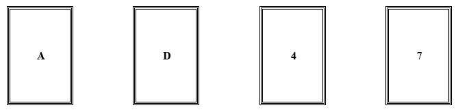
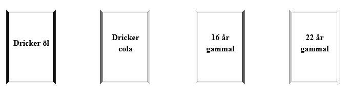
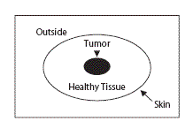
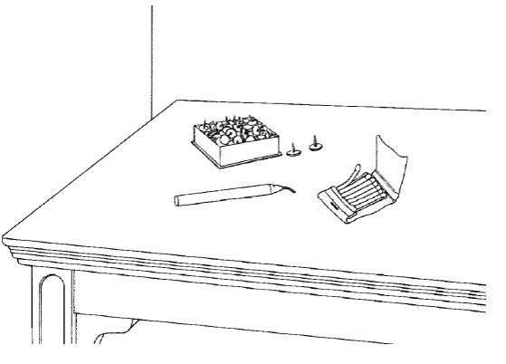

<!DOCTYPE html>
<html>
  <head>
    <title>Övning Kognitiva Processer</title>
    <script src="jspsych-6.2.0/jspsych.js"></script>
    <script src="jspsych-6.2.0/plugins/jspsych-html-keyboard-response.js"></script>
    <script src="jspsych-6.2.0/plugins/jspsych-html-button-response.js"></script>
    <script src="jspsych-6.2.0/plugins/jspsych-image-keyboard-response.js"></script>
    <script src="jspsych-6.2.0/plugins/jspsych-survey-html-form.js"></script>
    <script src="jspsych-6.2.0/plugins/jspsych-survey-multi-choice.js"></script>
    <script src="jspsych-6.2.0/plugins/jspsych-survey-text.js"></script>
    <link href="jspsych-6.2.0/css/jspsych.css" rel="stylesheet" type="text/css">
    <link href="extrastyle.css" rel="stylesheet" type="text/css">
    <meta charset="utf-8"/>
  </head>
  <body>  </body>
    <script>
        /* create timeline */
        var timeline = [];
        var asian_group = [];

        /* welcome message */
        var welcome = {
            type: "survey-multi-choice",
            preamble: "<h2>Välkommen till dagens övning. </h2> <p> Vänta tills försöksledaren ber dig fortsätta. </p>",
            questions: [
                {prompt: "Välj ditt gruppnummer:", name: "group", options: ["A", "B"], required: true}
            ],
            button_label: ["Fortsätt"],
            on_finish: function(data){
                asian_group = JSON.parse(data.responses).group;
            }
        };
        timeline.push(welcome);


        /* JUDGMENT TASK BEGIN 
            get stuff */
        var wason_drink_response = [];
        var wason_response = [];
        var linda_response = [];

        /*give instructions */
        var judge_instructions = {
            type: "html-keyboard-response",
            choices: [32],
            stimulus: "<p><h1> Instruktioner Station A</h1></p>" +
            "<p> Du kommer nu få lösa ett antal uppgifter som är vanliga i studiet av individuella omdömen och beslutsfattande.</p> " + 
            " <p> Försök besvara varje fråga och arbeta utan att fråga dina gruppmedlemmar om hjälp - ni kommer diskutera era svar tillsammans seanre. </p>",
            prompt : "<p> Tryck på mellanslag för att börja </p>",
            post_trial_gap: 0
                    };
        timeline.push(judge_instructions);

        /* Wason task */
        var wason_task = {
            type: "survey-html-form",
            preamble: "<h2> Wason-uppgiften </h2><p> Nedan ser du fyra kort. Varje kort har en bokstav på ena sidan och en siffra på den andra sidan. Vilka av korten skulle du behöva vända på för att bedöma om följande regel stämmer om samtliga korten?</p>" +
                "<p>'Om ett kort har en vokal på ena sidan, då har det en jämn siffra på andra sidan.'</p>" ,
            html: '<p> Mitt svar: <input type="text" id="test-resp-box" name="wason" size="10" /></p>'  +
                 "<div style='position:fixed, bottom:100px'></img></div> ",
            autofocus: 'test-resp-box',
            button_label: ["Fortsätt"],
            on_finish: function(data){
                  wason_response = JSON.parse(data.responses).wason ;
           }
        };
        timeline.push(wason_task);

        /* Drinking task */
        var wason_drink_task = {
            type: "survey-html-form",
            preamble: "<h2> Dryckersålder-uppgiften </h2>"+
                "<p> Föreställ dig att du är en polis i tjänst. Det är ditt jobb att se till att människor följer vissa regeler. Korten framför dig representerar fyra personer som sitter vid ett bord. På ena sidan av ett kort ser du personens ålder och på den andra vad den personen dricker.  </p>" +
                "<p> Här är en regel: 'Om en person dricker öl, så måste den vara minst 19 år gammal.' </p>" +
                "<p> Välj det kort, eller de kort, som du definitivt måste vända på för att avgöra om regeln följs i det här sällskapet. " ,
            html: '<p> Mitt svar: <input type="text" id="test-resp-box" name="wason_drink" size="10" /></p>'  +
                 "<div style='position:fixed, bottom:100px'></img></div> ",
            autofocus: 'test-resp-box',
            button_label: ["Fortsätt"],
            on_finish: function(data){
                  wason_drink_response = JSON.parse(data.responses).wason_drink ;
           }
        };
        timeline.push(wason_drink_task);
        
        /* Asian disease problem */
        var asian_disease = {
            type: "survey-html-form",
            preamble: function(){
                if (asian_group=="A"){
                   var strategi = "<p> Strategi A: 200 personer kommer att räddas. </p>" + 
                "<p> Strategi B: Med 1/3 sannolikhet kommer 600 personer att räddas, och med 2/3 sannolikhet kommer ingen att räddas.</p>"
                } else {
                    var strategi = "<p> Strategi C: 400 personer kommer att dö. </p>" + 
                "<p> Strategi D: Med 1/3 sannolikhet kommer ingen att att dö, och med 2/3 sannolikhet kommer alla att dö.</p>"
                }           
                return("<h2> Influensaproblemet </h2>" +
                    "<p> Föreställ dig att USA förbereder sig för ett utbrott av en ny och ovanlig influensa, som förväntas döda 600 människor. Två alternativa strategies för att bekämpa influensan har utformats. Anta att den exakta vetenskapliga beräkningen av konsekvenserna av de två strategierna är som följer: </p>" +
                    strategi)
                },
            html: "<p> Vilken av de två strategierna föredrar du? <input type='text' id = 'test-resp-box' name = 'asian_disease' size = '10' /> </p> ",
            autofocus: 'test-resp-box',
            button_label: ["Fortsätt"],
            on_finish: function(data){
                asian_disease_response = JSON.parse(data.responses).asian_disease ;
            }
        };
        timeline.push(asian_disease)

        /* Linda problem */
        var linda_task = {
            type: "survey-multi-choice",
            preamble:  "<h2> Lindaproblemet </h2> "+
                "<p> Linda är 31 år gammal, singel, säger vad hon tycker och mycket smart. Hon har en examen i filosofi. När hon var student var hon väldigt engagerad i rättvise och diskrimineringsfrågor och deltog även i antikärnkraftsdemonstrationer. </p>" +
                "<p> Vilket av följande påståenden är mest sannolikt? </p>" +
                "<p> Linda jobbar på bank.  </p>" + 
                "<p> Linda jobbar på bank och är aktiv i kvinnorörelsen. </p> ",
            questions: [
                {prompt: "Mitt svar:", name: "linda", options: ["A. Linda jobbar på bank.", "B. Linda jobbar på bank och är aktiv i kvinnorörelsen."]}
            ],
            button_label: ["Fortsätt"],
            on_finish: function(data){
                  linda_response = JSON.parse(data.responses).linda ;
            }
        };
        timeline.push(linda_task);

        /* judge summary and Qs */
        var judge_final = {
            type: "html-button-response",
            stimulus: function(){
                var judge_discussion = "<h1> Diskussionsfrågor </h1>" +
                    "<p> Jämför dina svar på Wason och dryckesålderuppgifterna! Liknar uppgifterna varandra? Liknar dina svara varandra? Diskutera tillsammans varför eller varför inte. </p>" +
                    "<p> Jämför era svar  på Linda frågan med varandra i gruppen. Hur resonerade ni för att besvara frågan? </p>" ;
                var dina_svar = "<div style='position:absolute; top:100px; left: 300px; right:300px'><p style='font-size:100%'> Dina svar: </p><p style='color:red; font-size:80%'> Wason: " + wason_response + "</p>" +
                    "<p style='color:red; font-size:80%'> Dryckesålder: " + wason_drink_response + "</p>" +
                    "<p style='color:red; font-size:80%'> Linda: " + linda_response + "</p></div>";
                return(dina_svar + judge_discussion)
            },
            choices: ["Fortsätt"],
            prompt: "Tryck \"Fortsätt\" när ni diskuterat klart och vill påbörja nästa del."
        };
        timeline.push(judge_final);


        /* IOWA TASK BEGIN
            Give instructions */
        var iowa_instructions = {
            type: "html-keyboard-response",
            choices: [32],
            stimulus: "<p><h1> Instruktioner Station B </h1></p>" +
            "<p> Du kommer nu får spela ett \"casino\"spel. Du kommer välja mellan fyra olika högar med spelkort (D, F, J, K), genom att trycka motsvarande tangent på tangentbordet. </p>" +
            "<p> Vid varje har du möjlighet att vinna lite pengar. Ibland kommer du också behöva betala en avgift till banken. Efter varje omgång hämtar du in dina pengar och din totalsumma justeras. </p>" + 
            "<p> Du börjar spelet med ett lån på <strong>2000kr</strong> </p>" + 
            "<p> Spelet består av många omgångar och tar cirka 5-10 minuter att spela. </p>" + 
            "<p> Spela tills spelet tar slut, och försök samla ihop så mycket du kan utöver ditt lån på 2000kr. </p>",
            prompt : "<p> Tryck på mellanslag för att börja </p>",
            data: {
                cumulative_points:2000
            },
            post_trial_gap: 0
                    };
        timeline.push(iowa_instructions);
                    
        /* iowa trial */
        /* define stuff needed */
        var trial_no = 0;
        var this_reward = 0;
        var this_penalty = 0;
        var current_sum = 0;
        function generate_array(input_arr, times = 10){
            let output = [];
            for (i=0; i < times; i++){
                output = output.concat(jsPsych.randomization.shuffle(input_arr));
            }
            return(output)
        }
        var bad_low_penalty = generate_array(input_arr = [0, 0, 0, 0, 0, -150, -200, -250, -300, -350]);
        var bad_high_penalty = generate_array(input_arr = [0, 0, 0, 0, 0, 0, 0, 0, 0, -1250]);
        var good_low_penalty = generate_array(input_arr = [0, 0, 0, 0, 0, -50, -50, -50, -50, -50]);
        var good_high_penalty = generate_array(input_arr = [0, 0, 0, 0, 0, 0, 0, 0, 0, -250]);
        
        // display related below
        var card_image = "</img>";
        var coin_image = "</img>"
        var coin_dict = {
            "50": "</img>",
            "100": "</img>",
            "-50": "</img>",
            "-250": "</img>",
            "-150": "</img>",
            "-200": "</img>",
            "-300": "</img>",
            "-350": "</img>",
        }
        var show_cards = "<div style='position:fixed; bottom:50px; right:"+ ((screen.width/6)*1) +"px;'>" + card_image + "</div>" +
            "<div style='position:fixed; bottom:50px; right:"+ ((screen.width/6)*2) +"px;'>" + card_image + "</div>" + 
            "<div style='position:fixed; bottom:50px; right:"+ ((screen.width/6)*3) +"px;'>" + card_image + "</div>" +
            "<div style='position:fixed; bottom:50px; right:"+ ((screen.width/6)*4) +"px;'>" + card_image + "</div>"  ; 
        var card_text = "<div style='position:fixed; bottom:0px; right:"+ ((screen.width/6)*1 + screen.width/14) +"px;'> <p style='font-size:150%'>K</p> </div>" +
            "<div style='position:fixed; bottom:0px; right:"+ ((screen.width/6)*2 + screen.width/14) +"px;'> <p style='font-size:150%'>J</p> </div>" +
            "<div style='position:fixed; bottom:0px; right:"+ ((screen.width/6)*3 + screen.width/14) +"px;'> <p style='font-size:150%'>F</p> </div>" + 
            "<div style='position:fixed; bottom:0px; right:"+ ((screen.width/6)*4 + screen.width/14) +"px;'> <p style='font-size:150%'>D</p> </div>";
        var instruction_text = "<div style='position:fixed; bottom:500px; left:400px; right:400px;'><p> Dra ett kort från en av högarna, genom att trycka D, F, J eller K på ditt tangentbord. </p> </div>";
        var iowa_discussion = "<h1> Diskussionsfrågor </h1>" +
            "<p>Reflektera kring din strategi när du valde mellan kortlekarna och jämför hur övriga gruppmedlemmar gjorde.</p>" +
            "<p> Valde ni samma strategi? </p>" +
            "<p> Var det några av kortlekarna som var särskilt bra eller dåliga? Hade ni alla samma upplevelse?</p>" + 
            "<p> Vad gjorde kortlekarna särskilt bra eller dåliga? </p>"

        /* display */
        var iowa_display = {
            type: "html-keyboard-response",
            choices: ['d','f','j','k'],
            stimulus: function(){
                current_sum = jsPsych.data.getLastTrialData().values()[0].cumulative_points
                var dina_pengar = "<div style='position:absolute; top:100px; left: 300px; right:300px'><p style='color:red; font-size:160%'> Dina pengar: " + current_sum + "kr </p></div>";
                return(dina_pengar + show_cards + card_text + instruction_text)
            },
            data:{
                category: "iowa_choice",
                cumulative_points: function(){
                    var tmp = jsPsych.data.getLastTrialData().values()[0].cumulative_points;
                    return(tmp)}
            },
            on_finish: function(data){
                if(data.key_press == jsPsych.pluginAPI.convertKeyCharacterToKeyCode('d')){
                    data.deck_chosen = "bad_low";
                    this_reward = 100;
                    this_penalty = bad_low_penalty[trial_no];
                } else {
                    if(data.key_press == jsPsych.pluginAPI.convertKeyCharacterToKeyCode('f')){
                        data.deck_chosen = "bad_high";
                        this_reward = 100;
                        this_penalty = bad_high_penalty[trial_no];
                    } else {
                        if(data.key_press == jsPsych.pluginAPI.convertKeyCharacterToKeyCode('j')){
                            data.deck_chosen = "good_low";
                            this_reward  = 50;
                            this_penalty = good_low_penalty[trial_no];
                        } else {
                            data.deck_chosen = "good_high"
                            this_reward  = 50;
                            this_penalty = good_high_penalty[trial_no];
                        }
                    }
                    
                };
                data.trial_no = (trial_no = trial_no+1);
                data.reward = this_reward;
                data.penalty = this_penalty;
                data.cumulative_points =  data.cumulative_points + this_reward + this_penalty;
            }
        };

        /* show outcome */
        var iowa_outcome = {
            type: "html-keyboard-response",
            stimulus: function(){
                var last_rew = jsPsych.data.getLastTrialData().values()[0].reward;
                var pos_coin = "<div style='position:fixed; bottom:600px; right:"+ ((screen.width/5)*3) +"px'>" + coin_dict[last_rew] + "</div>";
                var last_pun = jsPsych.data.getLastTrialData().values()[0].penalty;
                var pen_coin = ""
                if(last_pun != 0){
                    pen_coin = "<div style='position:fixed; bottom:600px; left:"+ ((screen.width/5)*3) +"px'>" + coin_dict[last_pun] + "</div>";
                } 
                var describe_outcome = "<p>Tryck mellanslag för att acceptera utfallet.</p>";
                return(show_cards + pos_coin + pen_coin + describe_outcome)
            },
            choices: [32],
            data:{
                category: "iowa_choice",
                cumulative_points: function(){
                    var tmp = jsPsych.data.getLastTrialData().values()[0].cumulative_points;
                    return(tmp)}
            }
        };

        /* push iowa main */
        var iowa_procedure ={
            timeline: [iowa_display, iowa_outcome],
            repetitions: 2
        };
        timeline.push(iowa_procedure);

        /* iowa summary and Qs */
        var iowa_final = {
            type: "html-button-response",
            stimulus: function(){
                current_sum = jsPsych.data.getLastTrialData().values()[0].cumulative_points
                var dina_pengar = "<div style='position:absolute; top:100px; left: 300px; right:300px'><p style='color:red; font-size:160%'> Dina pengar: " + current_sum + "kr </p></div>";
                return(dina_pengar + iowa_discussion)
            },
            choices: ["Fortsätt"],
            prompt: "Tryck \"Fortsätt\" när ni diskuterat klart och vill påbörja nästa del."
        };
        timeline.push(iowa_final);

        /* PROBLEM SOLVING 
            get stuff */
            var duncker_response = [];
        var duncker_candle_response = [];
        var monk_response = [];
        var orc_response = [];

         /*give instructions */
         var problem_instructions = {
            type: "html-keyboard-response",
            choices: [32],
            stimulus: "<p><h1> Instruktioner Station D</h1></p>" +
            "<p> Du kommer nu få lösa ett antal uppgifter som är vanliga i studiet av problemlösande.</p> " + 
            " <p> Försök besvara varje fråga och arbeta utan att fråga dina gruppmedlemmar om hjälp - ni kommer diskutera era svar tillsammans seanre. </p>",
            prompt : "<p> Tryck på mellanslag för att börja </p>",
            post_trial_gap: 0
                    };
        timeline.push(problem_instructions);

        var duncker = {
            type: "survey-text",
            preamble: "<h2> Dunckers strålningsproblem </h2>" +
                "<p> Anta att du är en läkare vars patient har en elakartad tumör i magen. Det är omöjligt att operera patienten. Om tumören inte avlägsnas kommer patienten att dö" +
                "Det finns en typ av strålar som kan användas för att förstöra tumören. Om strålarna riktas mot tumören med tillräcklig intensitet förstörs tumören." + 
                " Vid höga intensiteter så förstör strålarna inte bara tumörer utan även hälsosam vävnad. Vid låga intensiteter är strålarna harmlösa för all vävnad. </p>"+
                "</img>",
            questions: [
                {prompt:  "<p> Hur kan du utforma proceduren så att tumören förstörs av strålarna men samtidigt ingen av den hälsosamma vävnaden skadas?</p>",
                placeholder: "Skriv här...", rows:10, columns: 50,
                name: "duncker"}
            ],
            button_label: ["Fortsätt"],         
            on_finish: function(data){
                duncker_response = JSON.parse(data.responses).duncker;
            }
        };
        timeline.push(duncker)

        var duncker_candle = {
            type: "survey-text",
            preamble: "<h2> Dunckers vaxljusproblem </h2>" +
                "<p> Anta att visas ett bord med en kartonglåda fylld med häftstift, ett vaxljus och en uppsättning tändstickor." +
                "Din uppgift är att hitta ett sätt att använda föremålen för att fästa ett ljus på väggen för att lysa upp rummet. </p>"+
                "</img>",
            questions: [
                {prompt:  "<p>Hur kan du åstadkomma detta? (Du kan anta att rummets väggar är gjorda av kork) </p>",
                placeholder: "Skriv här...", rows:10, columns: 50,
                name: "candle"}
            ],
            button_label: ["Fortsätt"],         
            on_finish: function(data){
                duncker_candle_response = JSON.parse(data.responses).candle;
            }
        };
        timeline.push(duncker_candle)

        var monk = {
            type: "survey-text",
            preamble: "<h2> Munkproblemet </h2>" +
                "<p>En morgon stiger en Buddhistmunk upp i gryning för att klättra upp för berget till templet på toppen." +
                "Han når templet strax före solnedgången. Ett par dagar senare lämnar munken templet i gryningen för att bege sig ner för berget. Eftersom det är nedförsbacke rör han sig lite snabbare än vad han gjorde uppåt. </p>",
            questions: [
                {prompt:  "<p> Visa att det finns en plats längs rutten där munken kommer befinna sig på exakt samma tidpunkt under båda resorna. </p>",
                placeholder: "Skriv här...", rows:10, columns: 50,
                name: "monk"}
            ],
            button_label: ["Fortsätt"],         
            on_finish: function(data){
                monk_response = JSON.parse(data.responses).monk;
            }
        };
        timeline.push(monk)

        var orc = {
            type: "survey-text",
            preamble: "<h2> Hobbitar och orcher </h2>" +
                "<p> Tre hobbitar och tre orcher står vid en stor flodbank, och de vill alla korsa över till andra sidan. " +
                "Tursamt nog finns det en båt, men otursamt nog kan bra två varelser färdas på den åt gången. Situtationen kompliceras ytterligare av att orcher är ganska fasansfulla varelser." +
                "Närhelst det finns fler orcher än hobbitar på en flodbank så kommer de omedelbart anfalla hobbitarna och äta upp dem. " +
                "Du kan därför aldrig lämna fler orcher än hobbitar på endera flodbanken. Även om orcherna är fasansfulla går det lita på att de ror över båten.</p>",
            questions: [
                {prompt:  "<p>Din utmaning är att förflytta alla sex varelser över floden utan att orcherna äter upp hobbitarna. </p>",
                placeholder: "Skriv här...", rows:10, columns: 50,
                name: "orc"}
            ],
            button_label: ["Fortsätt"],         
            on_finish: function(data){
                orc_response = JSON.parse(data.responses).orc;
            }
        };
        timeline.push(orc)

        /* problem solving summary and Qs */
        var problem_final = {
            type: "html-button-response",
            stimulus: function(){
                var problem_discussion = "<h1> Diskussionsfrågor </h1>" +
                    "<p> Jämför era svar på de olika problemen. Hur resonerade de som löste problemen? Hur resonerade de som inte löste dem? </p>" +
                    "<p> Kan ni förklara hur ni landade i olika lösningar? </p>" ;
                var dina_svar = "<div style='position:absolute; top:100px; left: 300px; right:300px'><p style='font-size:100%'> Dina svar: </p>  "+
                    " <p style='color:red; font-size:80%'>Strålningsproblemet: " + duncker_response + "</p>" +
                    "<p style='color:red; font-size:80%'> Vaxljusproblemet: " + duncker_candle_response + "</p>" +
                    "<p style='color:red; font-size:80%'> Munkproblemet:" + monk_response + "</p></div>" +
                    "<p style='color:red; font-size:80%'> Hobbitproblemet:" + orc_response + "</p></div>";
                return(dina_svar + problem_discussion)
            },
            choices: ["Fortsätt"],
            prompt: "Tryck \"Fortsätt\" när ni diskuterat klart och vill påbörja nästa del."
        };
        timeline.push(problem_final);


        /* 
        ~~~
        start experiment
        ~~~
         */
        jsPsych.init({
            timeline: timeline,
            on_finish: function() {
                jsPsych.data.displayData()}
            });
    </script>


</html>
